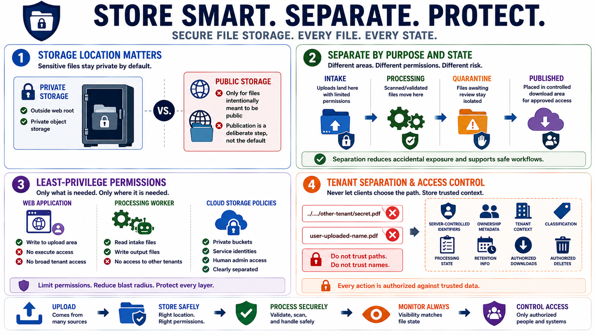

Safe File Storage Design
Connecting to LMS... Progress: in progress

Narration
Storage location matters. Sensitive uploads should often be stored outside the web root or in private object storage so they cannot be fetched directly by guessing a path. Public storage should be reserved for files intentionally meant to be public. Even then, publication should be a deliberate step, not the default result of receiving a file from a user or integration.
Separating upload, processing, quarantine, and published areas reduces accidental exposure. An uploaded file can land in an intake area with limited permissions. A scanner or processor can move accepted files into a processing area. Files awaiting review can remain quarantined. Published files can be placed in an area designed for controlled download. This separation lets permissions and monitoring match the file's current state.
Least-privilege permissions are essential. The web application may need write access to an upload area, but it may not need execute permissions. A processing worker may need read access to intake files and write access to output files, but not broad access to every tenant's storage. Cloud object storage policies should clearly distinguish private buckets, public buckets, service identities, and human administrative access.
Tenant separation and access control should be built into storage design. Do not let a client-supplied path decide where an object lands. Do not rely on predictable file names as the access control model. Store server-controlled identifiers, ownership metadata, tenant context, classification, processing state, and retention information so that every later download, share, or delete operation can be authorized against trusted data.